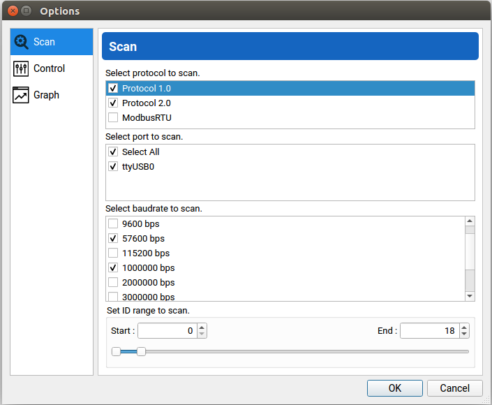

Troubleshooting
This guide walks a user through possible issues that can occur when using a DYNAMIXEL-based robot and how to fix them. If, after following this guide, the issues persists, take a look at the interbotix_ros_manipulators bug tracker. If you can’t find an answer there, feel free to open your own issue.
Important
These software packages are only supported on a Linux machine running ROS Melodic on Ubuntu 18.04, ROS Noetic on Ubuntu 20.04, ROS 2 Galactic on Ubuntu 20.04, and ROS 2 Humble and Rolling on Ubuntu 22.04, not on any other operating system (ex. Mac, Windows), or in a virtual machine.
DYNAMIXEL Wizard 2.0 Tool
For debugging purposes, we highly recommend to install the DYNAMIXEL Wizard 2.0 tool created by ROBOTIS (our motor supplier). This tool makes it easy to find and view and configure the registers of all the motors attached to the U2D2 from a graphical interface. After following the installation instructions for your platform, open up the Wizard, and click the Options button. A window similar to the one below should pop up.
All of our X-Series robots use motors with Protocol 2.0 and a baud-rate set to 1000000 bps. Additionally, none of our robots currently use more than 36 motors. As such, to properly scan for the motors in your robot, you should at least select the following options:
- Protocol 2.0
- Port that U2D2 controller is connected to (typically ttyUSB0)
- Baudrate of 1000000 bps
- ID range from 0 - 36
After configuring the options, press OK and hit the Scan button. The DYNAMIXELs should appear on the left-hand pane of the Wizard. If some motors are missing, open up the Options tab again and additionally select the following options:
- Protocol 1.0 checkbox
- Baudrate of 57600 bps
Press OK and hit the Scan button again. The reasoning behind this last step is that ROBOTIS by default ships all new motors with baudrates of 57600 bps and IDs of 1. At Interbotix, we try to change the baudrates to 1000000 bps, but occasionally a motor could slip through the system. If that’s the case with you, the baud rate can easily be changed by clicking the ‘Baud Rate (Bus)’ register, selecting the ‘1 Mbps’ option in the pane on the lower right corner, and clicking Save.
Common Issues
Can’t find DYNAMIXEL ID
If you see a red error message in the terminal after launching the ROS driver node that says
[xs_sdk] Can't find DYNAMIXEL ID '1', Joint Name : 'waist' or similar, don’t panic! All the
node is trying to say is that it tried to ping the motor with that ID and joint name, but never
received a response. This could happen due to a few reasons:
- One or more motors are in an error state - If any motor has a red flashing LED, the ROS node will not be able to find it during startup. In this case, unplug/replug power from from the motor hub and try again.
- Motor has an incorrect baud rate - The ROS driver node expects all motors to be set to communicate at 1 Mbps. However, it’s possible that the motor specified in the error message has an incorrect baudrate (probably 57600 bps as that’s the default ROBOTIS ships them with). To fix this, head up to the DYNAMIXEL Wizard 2.0 Tool section above to learn how to set the correct baudrate.
- No power - In order for the ROS node to find the motors, let alone move them, the motor hub must be plugged in to a 12V power supply (that can deliver at least 1A). For those connecting your 12V power supply to power strips, verify that the power strip is connected to an outlet and is turned on. If using a battery, make sure that it still has enough power.
- Loose Cable - Verify that all 3-pin cables chaining the DYNAMIXELs together (including the U2D2 and power hub) are snugly fit into their housings. If not, use a finger to press them in, and try again.
- Servos share an ID - If two or more servos share the same ID, the ROS driver will be unable to find any servos on the chain. To check if this is the case, connect servos to the U2D2 one-at-a-time and re-scan using the DYNAMIXEL Wizard 2.0 Tool according to the options above. If two or more servos do indeed share the same ID, you can set the proper IDs according to the Default Servo Configurations in your robot’s In-Depth Specifications.
Red LED Flashing on motor(s)
If a motor’s LED is flashing roughly once per second, this indicates that it is in an error state. In this state, the motor will torque off and not respond to commands. Two common reasons this can happen is if it is ‘overloaded’ or ‘overheated’.
Overloading can occur if a motor is commanded to go to a position, but physically cannot due to an obstacle being in the way. This typically comes up if doing position control with a two-fingered gripper. If the gripper is commanded to fully close around a small rigid object, the motor will stall and after a few seconds, go into an error state. Thus, if doing position control with a gripper, make sure to close the gripper just enough to grasp the object but not more. Alternatively, use PWM or Current control.
Overheating can occur if commanding high PWM or current values to a motor for a long period of time. To counteract this, either send lower commands or shorten the time that high commands are sent.
In any event, to fix this error, either power cycle the motors (unplug/replug the power cable to
the motor hub), or call the reboot_motors ROS service for those particular motors. The
advantage of doing the second approach is that the ROS session does not have to be shut down
beforehand.
Failed to open port at /dev/ttyDXL
If you see a red error message in the terminal after launching the ROS driver node that says
[xs_sdk] Failed to open port at ttyDXL, that means the computer cannot find the U2D2 device.
This could happen due to a couple of reasons.
- MicroUSB cable is not plugged in - Verify that you have actually connected the U2D2 to your computer with a microUSB cable. Then try again.
- Port is busy - If you have the DYNAMIXEL Wizard 2.0 tool open and connected to the U2D2, make sure to either click the Disconnect button on the top left of the window or close out of the Wizard before running the ROS driver node. This way the port won’t be busy when the driver node is run.
Incorrect status packet
If you see 4 repeating red error messages in the terminal during node operation that say
[TxRxResult] Incorrect status packet!
groupSyncRead getdata failed
groupSyncRead getdata failed
groupSyncRead getdata failed
This series of errors means the computer failed to read some of the registers on the motors (typically, it’s the Present Position, Present_Velocity, and Present_Current/Present_Load registers as these are read constantly so that the joint state topic can be updated). This could happen if the microUSB cable connecting the computer to the U2D2 is not plugged in fully, or if one or more of the 3-pin cables connecting the DYNAMIXELs together become loose during operation. To stop these errors, just push in all loose cables.
In some cases, you may need to replace the USB->Micro USB cable between the U2D2 your control computer, or even the 3-pin cables between servos or the Power Hub. Contact Trossen Robotics support if this is the case.
Failed to write value[] on items[] to [ID : ]
[ERROR] [xs_sdk] Failed to write value[131] on items[Velocity_Limit] to [ID : 5]
[FATAL] [xs_sdk] Failed to write configurations to all motors. Shutting down...
This error message means that something went wrong when writing configurations to the EEPROM registers. This can typically be fixed by power-cycling the robot and re-launching the control software. It may have the same root cause as the Incorrect status packet error <troubleshooting_incorrect_status_packet> and could have the same solution.
[WARN] Writing startup register values to EEPROM.
This warning means that the robot’s servos’ EEPROM registers were written to on startup. This only needs to be done once if using a default motor configuration file. Writing to the EEPROM on startup shortens the EEPROM’s life and takes a few extra seconds every time the robot is powered on.
To prevent this from happening in the future, the load_configs argument to the xsarm_control
package should be set to false, or, if using the xs_driver, the write_eeprom_on_startup
constructor argument should be set to false.
Less Common Issues
U2D2 not recognized (no symlink created)
You may run into an issue where the computer is able to detect that it is connected to a device via
lsusb, but no entry is created in the /dev directory. One possible reason may be that the
FTDI drivers are out of date or not compatible with the U2D2 device. To fix this issue, download
the latest recommended VCP drivers for Linux. Then reload and install the drivers by navigating
to the unpacked driver and running the following:
$ sudo modprobe ftdi_sio
Helpful Tips
Increase Motor Accuracy
One of the awesome things about Protocol 2.0 supporting DYNAMIXELs is their internal tunable feedback-controllers (either PID for position control or PI for velocity control). Default values are assigned to the PID gains, but if they are not strong enough, one can simply increase their values. Specifically, it is recommended to increase the Position_P_Gain register as many of our products work in the position operating mode. However, this register should not be increased too much (more than a few hundred points above its default) or it could cause the motor to overload.
Range Of Motion Check
For some of our robots, (like arms or turrets), the waist/pan motor has a limit of -180/180 degrees. To make this range feasible, the 3-pin cable connecting the waist/pan motor to the shoulder/tilt motor is extra long. As a result, it is quite possible for someone to manually turn this joint 360 degrees in an untorqued state, and then end up trying to operate the robot in that state. This could lead to quite a few issues - like the cable being pulled out during operation, or the cable physically preventing the robot from rotating.
To fix this, we recommend cautiously flipping the robot upside down to look into the base cavity (as it’s hollow). It should be readily apparent by looking at the 3-pin cable going from the waist/pan motor to the shoulder/tilt motor if it’s wound up or straight. If it’s wound up, carefully rotate the waist/pan motor in the direction that ‘straightens’ the cable. Alternatively, you can check the ‘straightness’ of the cable without flipping the robot by checking its tautness from the hole by the shoulder/tilt motors. If it feels too taught, rotate the waist/pan motor in the direction that loosens it.